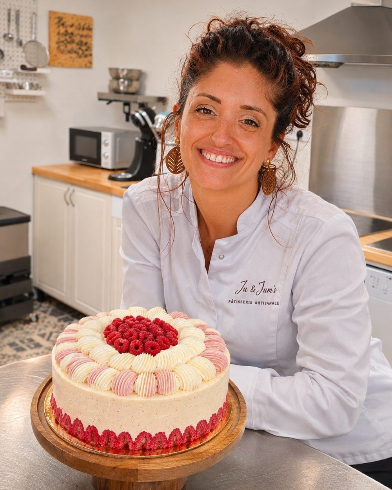
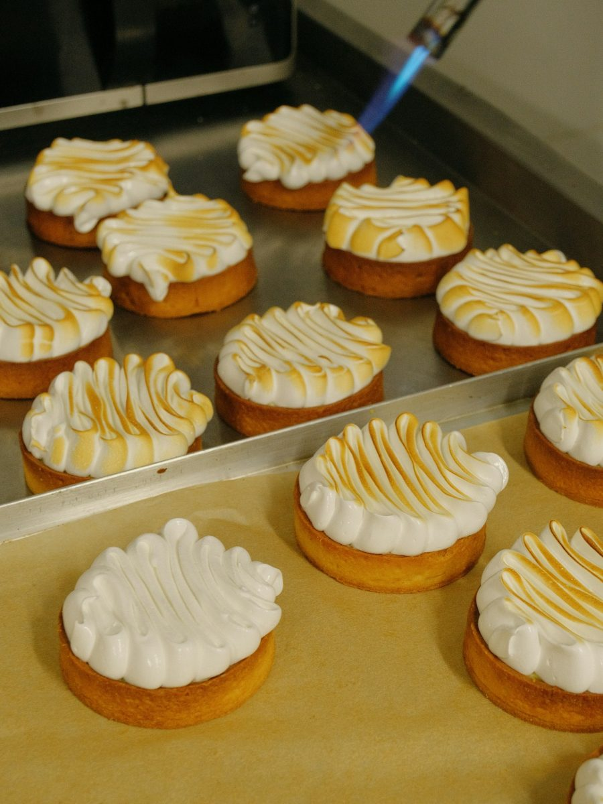
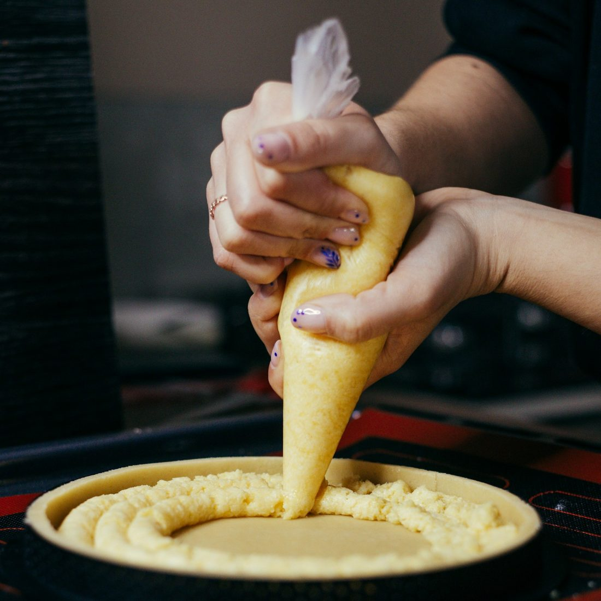
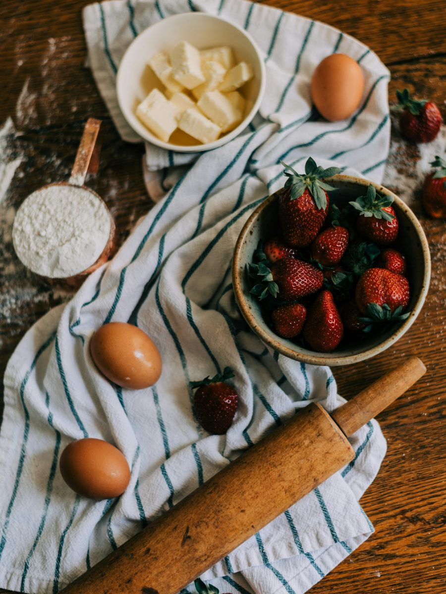

Une histoire de farine, de patience et de transmission.
Je m'appelle Laurie. Je fais des gâteaux depuis toujours : d'abord pour ma famille, puis dans des maisons exigeantes, aujourd'hui pour vous, dans mon atelier de Betchat, en Ariège.

Tout a commencé dans une petite cuisine.
Tout a commencé un dimanche après-midi, avec une tarte aux pommes un peu ratée et une grand-mère très patiente. Elle m'a appris à sentir quand une pâte est prête, à attendre que le caramel prenne sa couleur, à ne jamais tasser la farine. J'avais huit ans, et je venais de comprendre qu'un gâteau, ça se travaille.
Des années plus tard, j'ai fait de cette évidence un métier. CAP Pâtissier en poche, j'ai passé plusieurs années en boutique et en laboratoire, auprès de chefs exigeants. J'y ai appris la rigueur des pesées au gramme près, les pâtes qui reposent une nuit entière, les montages au millimètre, et le plaisir très simple de voir quelqu'un sourire à la première bouchée.
« Je ne fais pas des gâteaux pour remplir une vitrine. Je les fais pour une table, un soir, des gens. »
Ju&Jum's est née de l'envie de faire les choses à ma façon : moins de pièces, plus de soin. Ici, pas de vitrine remplie d'avance ni de gâteaux qui attendent. Chaque création est préparée pour une personne, une date, une occasion, et je prends le temps d'en parler avec vous avant de commencer.
Mon plus grand plaisir ? Recevoir, le lundi, la photo d'un plat vide et d'une famille réunie autour.
Quatre étapes, un même fil.
- [ANNÉE]
Premiers gâteaux
Dans la cuisine familiale, entre recettes recopiées à la main et premières vraies réussites.
- [ANNÉE]
CAP Pâtissier
Les bases classiques, la technique, la rigueur, et l'envie d'aller plus loin que la recette.
- [ANNÉE]
En maison
Plusieurs années en pâtisserie de boutique et en laboratoire traiteur, au rythme des fêtes et des mariages.
- [ANNÉE]
L'atelier
Ouverture de Ju&Jum's à Betchat : un laboratoire, des commandes, et des clients qui reviennent.
Là où tout se prépare.



Et si votre prochain gâteau avait une histoire ?
Racontez-moi l'occasion, je m'occupe de la mettre en saveurs. Réponse sous 48 h ouvrées.